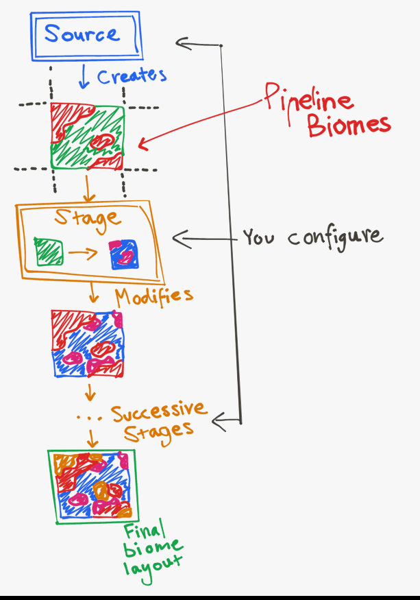

BiomeProvider#
A biome provider provides a Biome for any given position in the world. Biome providers are the main way to determine and configure where biomes will generate.
You can use the aptly named Biome Tool <https://github.com/PolyhedralDev/BiomeTool> to preview biome distribution defined by your
pack’s BiomeProvider. It is recommended to run the Biome Tool from your Terra directory so that all the addons
and packs you are developing with are loaded by the Biome Tool.
Types#
Different types of BiomeProvider provide different behaviours and may have additional parameters for configuring that behavior.
The type is specified by setting the type parameter to the name of the type. If the same name is used by two different addons, you can prefix the name with ADDON_NAME: to specify which one to use.
A list of available types for BiomeProvider are listed below:
SINGLE#
*Type requires the ‘biome-provider-single’ addon to use
EXTRUSION#
*Type requires the ‘biome-provider-extrusion’ addon to use
Default: 4
IMAGE#
*Type requires the ‘biome-provider-image-v2’ addon to use
color-conversion BiomeColorConverter
Default: 1
PIPELINE#
*Type requires the ‘biome-provider-pipeline-v2’ addon to use
‘The pipeline’ is a biome provider that distributes biomes procedurally in 2D.
The name comes from the way it operates, there is a ‘source’ which produces an initial biome layout, which then flows through successive stages that each modify the layout in some particular way. The final placement of biomes is determined by the result after all stages have been applied.
{kind=link}
Biome layouts can be thought of as images, where there would be biomes instead of colors for each pixel. Each stage can be thought of as some kind of filter or effect that is applied to the image.
pipeline.source Source - The initial biome layout.
pipeline.stages List<Stage> - A list of stages that are successively applied.
blend.amplitude Float - The blend strength.
Default: 0.0
blend.sampler NoiseSampler - A sampler that blends the pixelated effect produced by higher resolutions.
Default: Constant 0
Blending is done using the process of Domain Warping.
resolution Integer - A performance parameter that determines the size of each biome ‘pixel’ in blocks.
Default: 1
Increasing this will make the pipeline perform better, but also makes the biome distribution look more pixelated. A resolution of 1 results in the best quality. Resolutions between 2 and 4 don’t have very apparent pixelation when used in conjunction with blending.
Uses#
Used by 2 parameters:
-
biomes BiomeProvider - Determines where biomes should generate in the world.